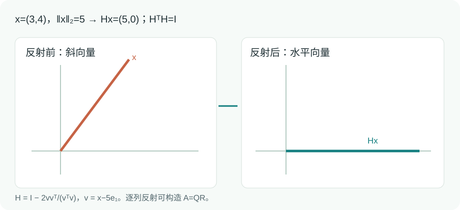

01 / 为什么正交化可以降低数值计算的风险？
给定两列向量 a₁=(3,4) 和 a₂=(1,0)，如果直接用不垂直的基来求最小二乘解，坐标之间会相互影响。QR 分解寻找一组相互正交的列向量 Q，使 A 可以写成 A=QR。Q 不会放大欧氏长度，R 是可以回代的上三角矩阵。

对 m≥n 且满列秩的实矩阵，精简 QR 中 Q∈R^{m×n} 且 QᵀQ=Iₙ，R∈R^{n×n} 为上三角。若 m=n，Q 还满足 QQᵀ=I。不能把精简 Q 在矩形情形也误写成完整正交方阵。
02 / Gram–Schmidt 如何得到正交基？
对第一列先归一化 q₁=a₁/‖a₁‖₂。第二列先减去它在 q₁ 上的投影，再归一化得到 q₂。对该算例，q₁=(3/5,4/5)、r₁₂=q₁ᵀa₂=3/5，残差为 a₂−(3/5)q₁=(16/25,−12/25)，其长度为 4/5，于是 q₂=(4/5,−3/5)。
经典 Gram–Schmidt 在浮点数上对近线性相关的列可能明显丧失正交性。修改 Gram–Schmidt 可以改善误差，而使用 Householder 反射构建密集 QR 通常更稳健。数学上它们均实现正交化；数值行为并不完全相同。
03 / 一次 Householder 反射的完整计算
对 x=(3,4)ᵀ，令 α=‖x‖₂=5、v=x−αe₁=(−2,4)ᵀ，定义 H=I−2vvᵀ/(vᵀv)。由于 vᵀv=20，可计算出 H=[[0.6,0.8],[0.8,−0.6]]，它同时满足 HᵀH=I 与 Hx=(5,0)。
本例的 R=HA=[[5,0.6],[0,0.8]]，而 Q=Hᵀ=H，所以 A=QR。在一般实现中，若 α 的符号选择不当，构造 v 时可能发生消去误差；稳定实现通常根据 x 的首分量符号选择反射目标方向。
04 / QR 如何解最小二乘而不用正规方程？
对超定系统 A∈R^{m×n} 且 m>n，解 minₓ‖Ax−b‖₂²。若 A 满列秩，精简 QR A=QR 满足 R x=Qᵀb，即上三角回代；剩下的 (I−QQᵀ)b 是正交残差。
例如 A=[[1,0],[0,1],[1,1]]、b=(1,2,2)，解为 x=(2/3,5/3)，残差 Ax−b=(−1/3,−1/3,1/3)，平方残差和为 1/3。若直接形成 AᵀA，其二范数条件数在 A 满列秩时会平方，QR 因而在浮点计算中有明显的数值优势。
05 / 实际核查 QᵀQ 与 QR
from math import isclose
A=((3.0,1.0),(4.0,0.0))
Q=((0.6,0.8),(0.8,-0.6))
R=((5.0,0.6),(0.0,0.8))
def mul(X,Y):
return tuple(tuple(sum(X[i][k]*Y[k][j] for k in range(2))
for j in range(2)) for i in range(2))
I=mul(Q,Q)
out=mul(Q,R)
for i in range(2):
for j in range(2):
assert isclose(I[i][j],1.0 if i==j else 0.0,abs_tol=1e-12)
assert isclose(out[i][j],A[i][j],abs_tol=1e-12)
print("orthogonality and reconstruction verified")预期：orthogonality and reconstruction verified。误差判断使用容差是因为小数运算存在舍入；工业代码需对相对误差、输入范数和浮点精度进一步量化。